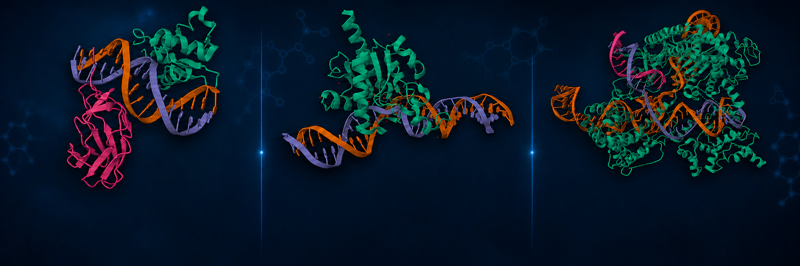
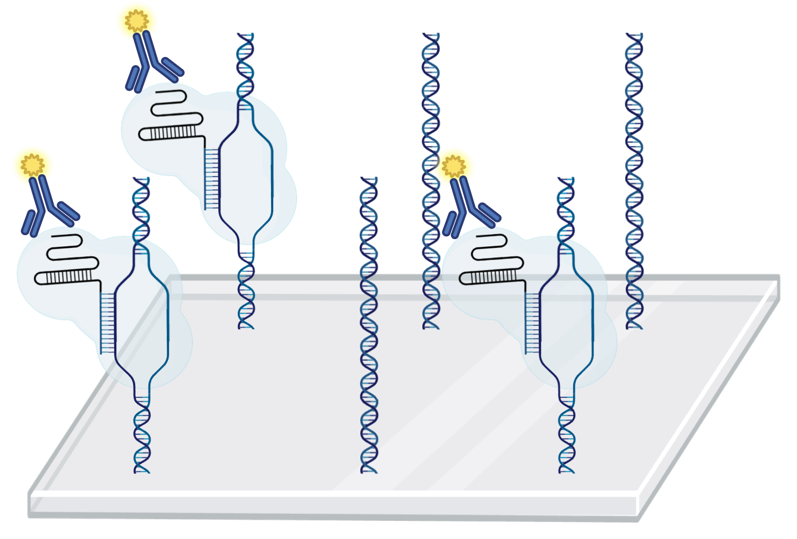
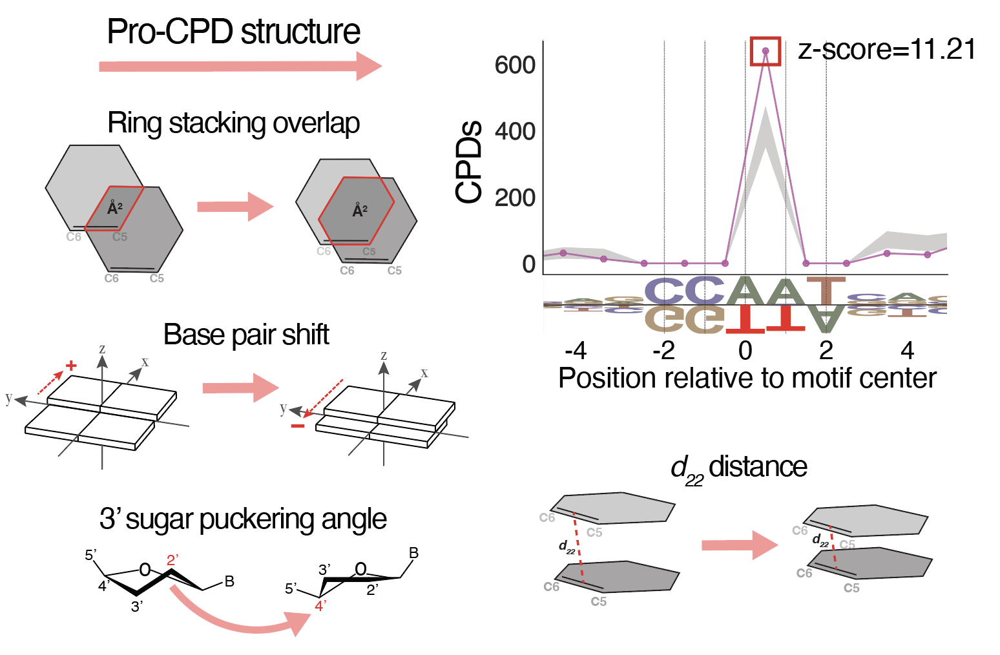
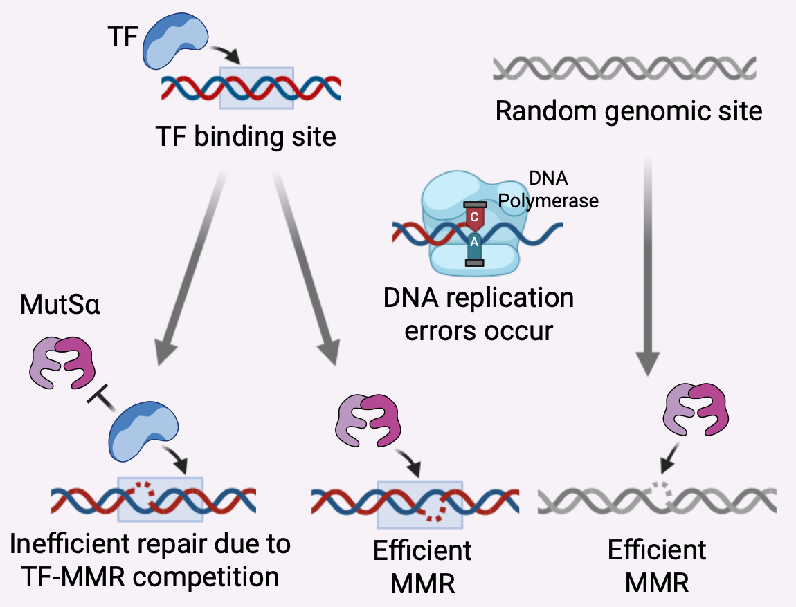
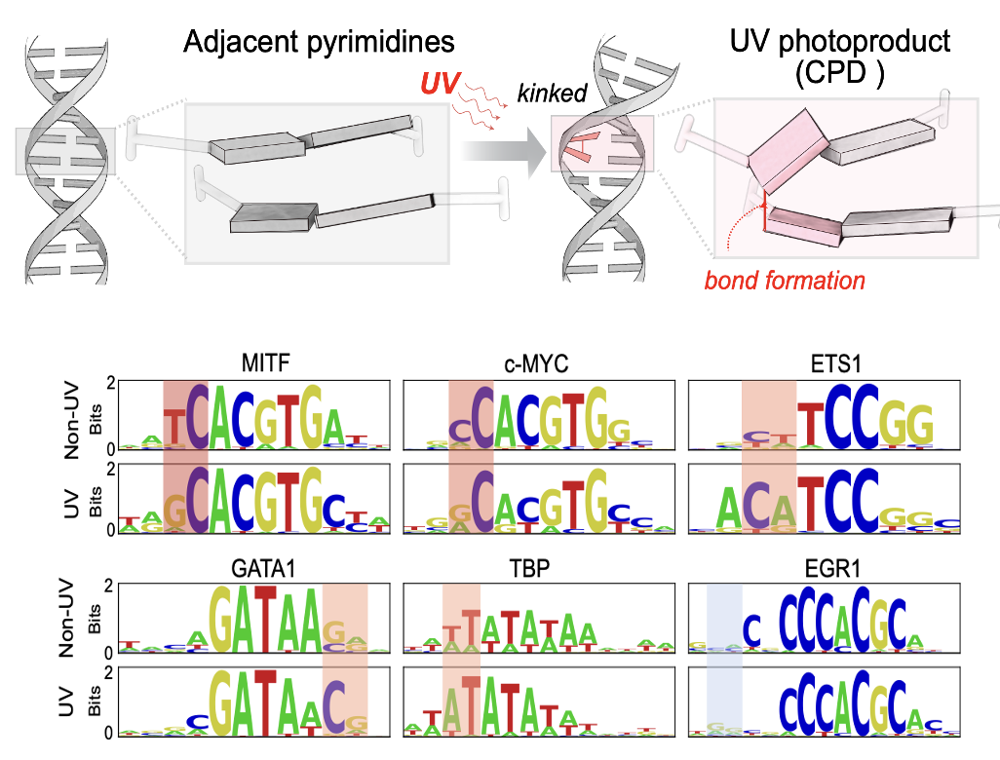
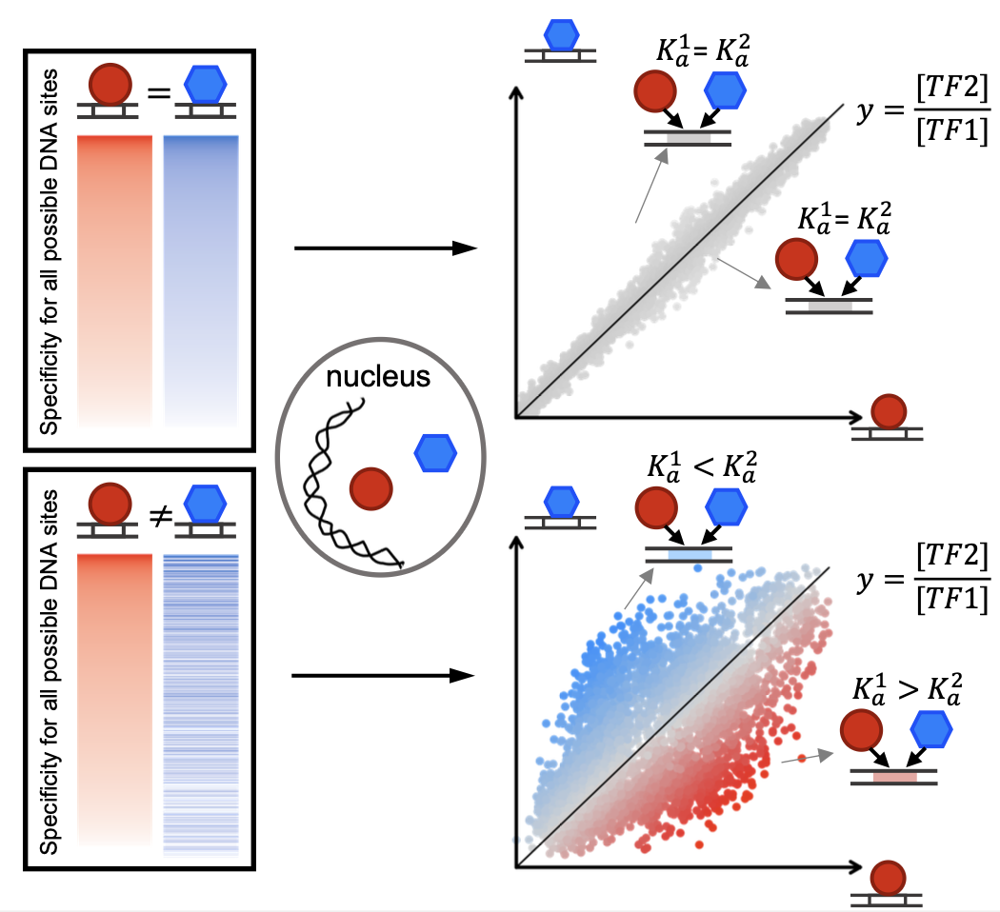
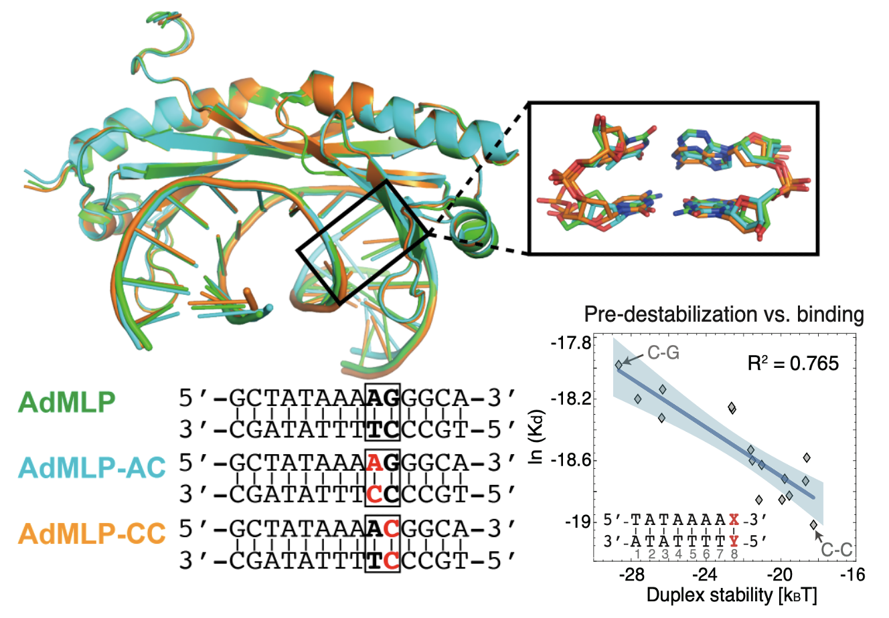

What we do
What we do
We study how transcription factors regulate gene expression, how they increase DNA mutagenesis by competing with DNA repair, and how gene regulation is modulated by CRISPR-Cas systems.
Explore our research ›
Protein-DNA interactions govern how genomes are regulated, maintained, and engineered. Our laboratory studies the molecular principles underlying these interactions to better understand gene regulation, genome stability, and to improve the precision of genome editing.
What we do
We study how transcription factors regulate gene expression, how they increase DNA mutagenesis by competing with DNA repair, and how gene regulation is modulated by CRISPR-Cas systems.
Explore our research › Why we do it
Why we do itUnderstanding genome biology, and ultimately engineering it, requires a quantitative, mechanistic understanding of how the genome is being recognized and altered by DNA-binding proteins.
 How we do it
How we do itWe combine high-throughput technologies, quantitative biochemistry, genomic analyses, and machine learning to build mechanistic models of protein-DNA binding and subsequent cellular activity.
 Who we are
Who we are
We are a collaborative team of experimental and computational scientists with a shared interest in protein-DNA interactions and their roles in cellular processes.
Meet the lab ›
Zhu W, Tian M, Duan Y, Reisman S, Miller S, Corden E, ter Weele M, Song L, Blount J, Safi A, Schreiber J, Gersbach C, Crawford G, Gordân R

Wasserman H, Chi B, Bohm K, Duan M, Sahay H, Safi A, Crawford G, Mao P, Wyrick J, Pufall M, Gordân R

Zhu W, Zhang Y, Sahay H, Wasserman H, Afek A, Williams J, Shaltz S, Johnson C, Pinheiro K, MacAlpine D, Weninger K, Erie D, Jinks-Robertson S, Gordân R

Mielko Z, Zhang Y, Sahay H, Liu Y, Schaich M, Schnable B, Morrison A, Burdinski D, Adar S, Pufall M, Van Houten B, Gordân R, Afek A

Zhang Y, Ho T, Buchler N, Gordân R

Afek A, Shi H, Rangadurai A, Sahay H, Senitzki A, Xhani S, Fang M, Salinas R, Mielko Z, Pufall M, Poon G, Haran T, Schumacher M, Al-Hashimi H, Gordân R
Follow our work in quantitative regulatory genomics at UMass Chan.
News, publications, and opportunities will appear here.